Shengjie Xu
BSc Information and Computing Science
- Led poster design
- Built core system features
- Assisted video scripting
- Updated the portfolio
Digital Object Museum of Generational Memory
Everyday objects carry the traces of how people lived, cared, learned, and remembered. Then & Now invites families to place objects from different generations side by side, turning small comparisons into a shared exhibition of memory.


BSc Information and Computing Science

BEng Digital Media Technology

BEng Digital Media Technology

BEng Digital Media Technology
The problem is not a lack of care, but a lack of shared language and shared topics between generations.
Why we chose our specific track
We chose the Heritage track because our project begins with a simple observation: family history is often stored in ordinary objects, but those objects are rarely used as living materials for conversation.
A CD player, photo album, handwritten letter, or old recipe can hold memories of work, school, love, migration, and everyday care, yet younger family members may only see them as outdated things. At the same time, grandparents often want to share stories, but digital tools and generational habits can make storytelling feel formal, difficult, or one-sided.
The Heritage track allowed us to treat heritage not as a distant museum collection, but as something personal, domestic, and still changing. We wanted to design a low-pressure experience where elders can start from familiar objects and children can explore through comparison, discovery, and play.
Then & Now turns heritage into an activity: users place past and present objects side by side, notice differences, ask questions, and save new memories. This direction fits our topic because it bridges emotional memory and everyday technology. It helps families preserve the past while creating new shared moments in the present. For us, heritage becomes valuable when it is visible, discussable, and emotionally accessible across generations.
Paper 1
Technologies for fostering intergenerational connectivity and relationships
Use everyday objects as low-pressure conversation starters, rather than relying only on game-based interaction.
Paper 3
Tangible Memories and Elders: Objects as Containers, Reminders and Instruments
Make everyday objects the main interaction trigger, with a simple visual interface for elders and engaging content for grandchildren.
Paper 2
Supporting intergenerational memento storytelling for older adults through a tangible display
Use familiar objects such as CDs, photos, or letters to naturally trigger in-person storytelling.
Paper 4
A Framework for Digital Technology to Foster Intergenerational Bonds at Home
Focus on home-based, face-to-face bonding through object-centered, low-pressure interaction.
Product 1
Turn shared memories into object-based, in-person activities instead of passive archives.
Product 3
Combine storytelling prompts with light, playful, object-based interaction.
Product 2
Adapt low-pressure communication into face-to-face object-based family activities.
Product 4
Keep the private, simple environment, but add interactive memory activities.
Who Family Link is Designed For — Family Link focuses on relationship maintenance during in-person family gatherings, not just individual messaging behaviour. It is designed for both users and the connection between them.
Familiar objects make storytelling simple and low-pressure.
Object comparison turns memories into shared play.
Everyday objects create warm face-to-face interaction.
The format can grow across family roles and events.
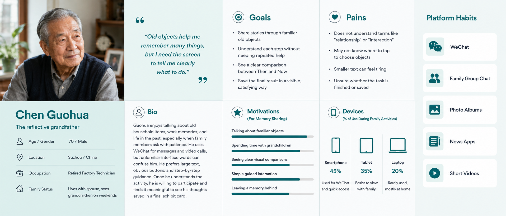
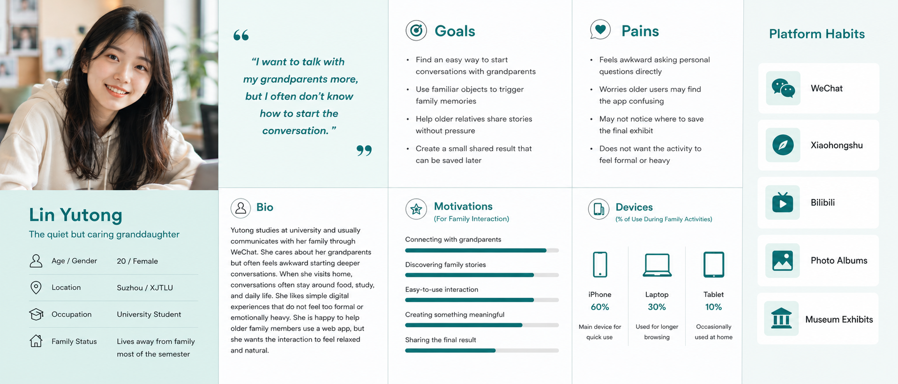


Four simple moments keep the experience focused, low-pressure, and easy for both generations to follow.
A familiar object appears.
Old and new objects are paired.
A prompt opens a family story.
The memory becomes an exhibit.

Users can select, combine, or manipulate objects to directly participate in the system.
Users explore visually with optional guidance; simple, intuitive operations ensure easy understanding.
Users receive instant visual feedback or rewards after interactions to encourage playful engagement.
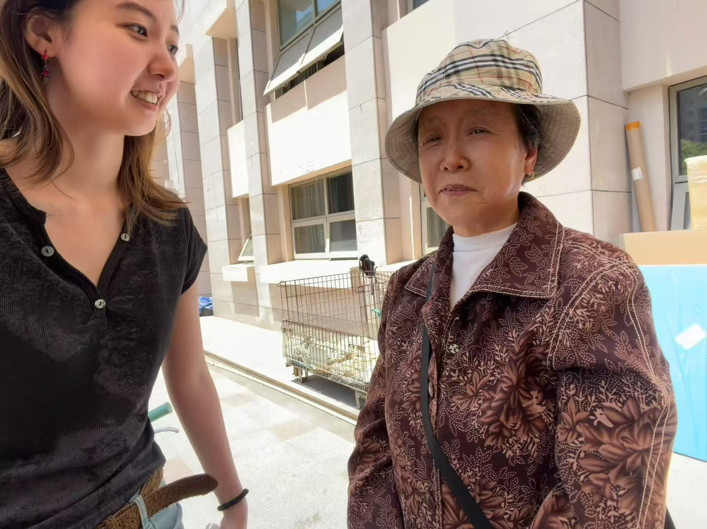
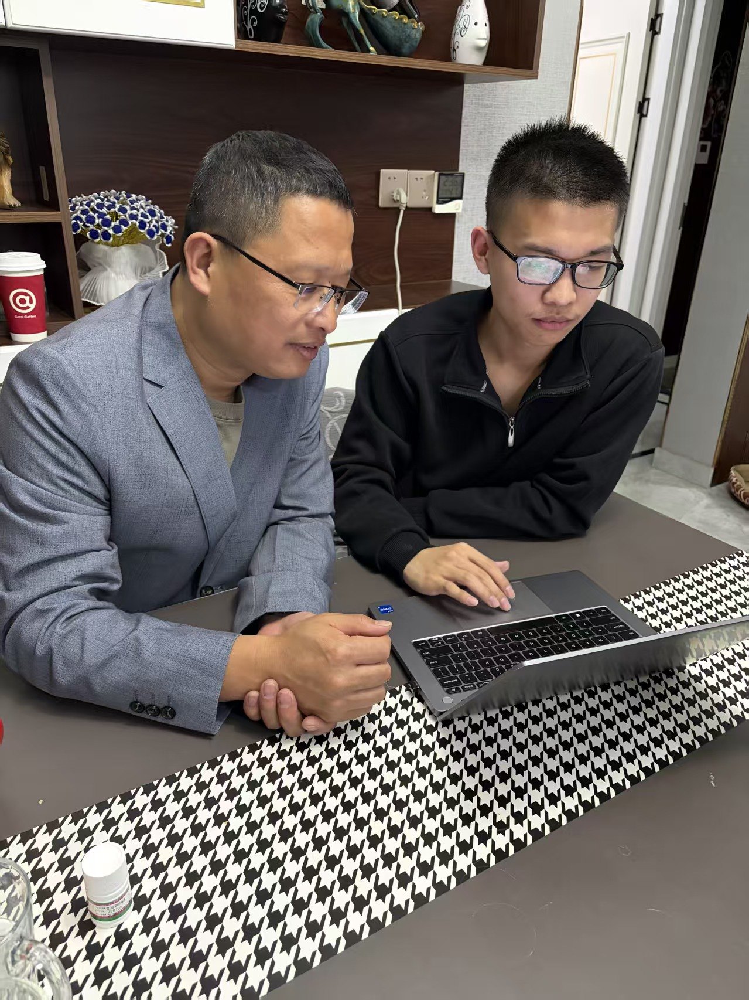
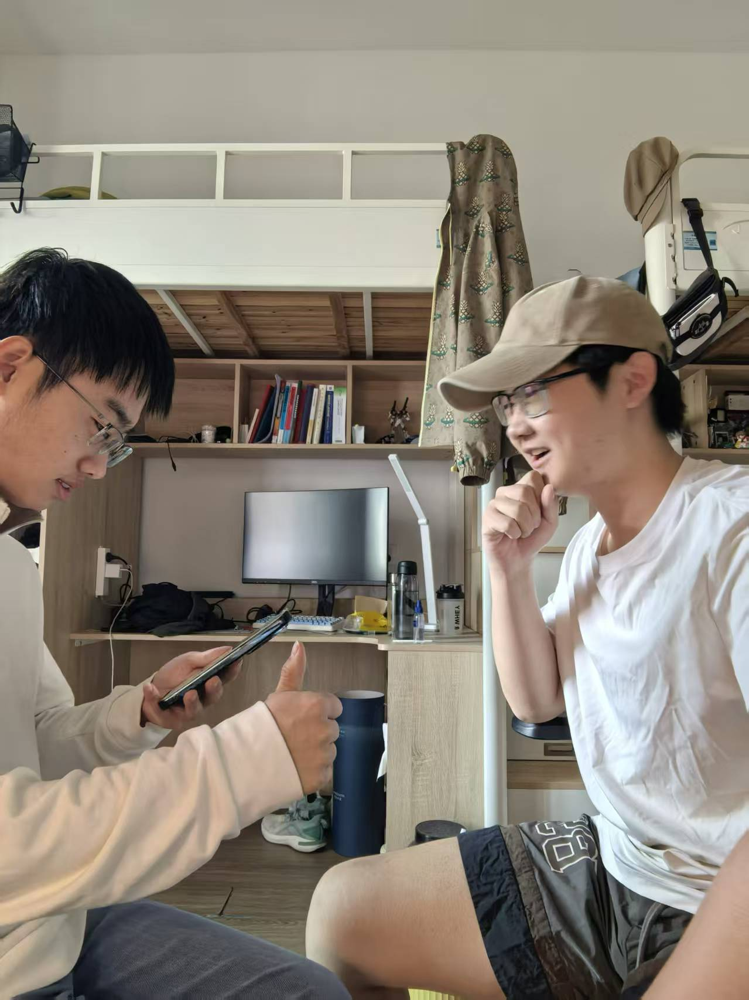
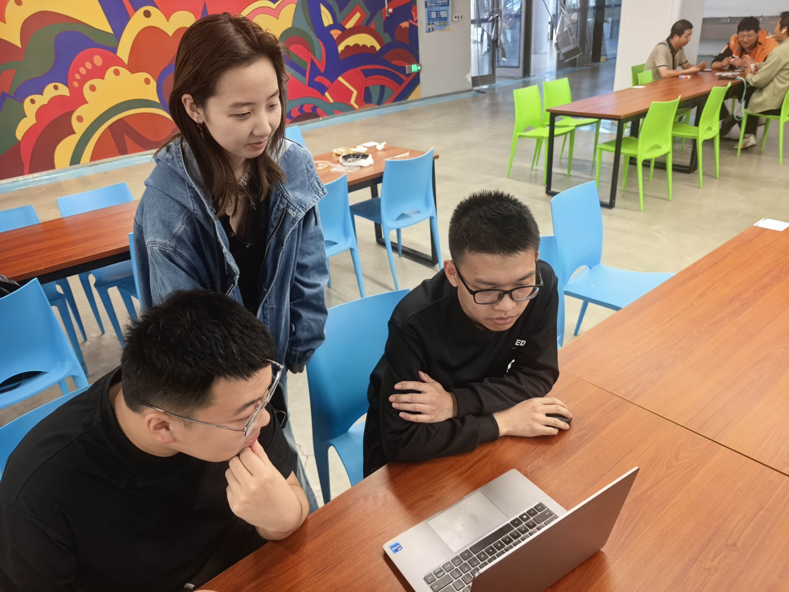
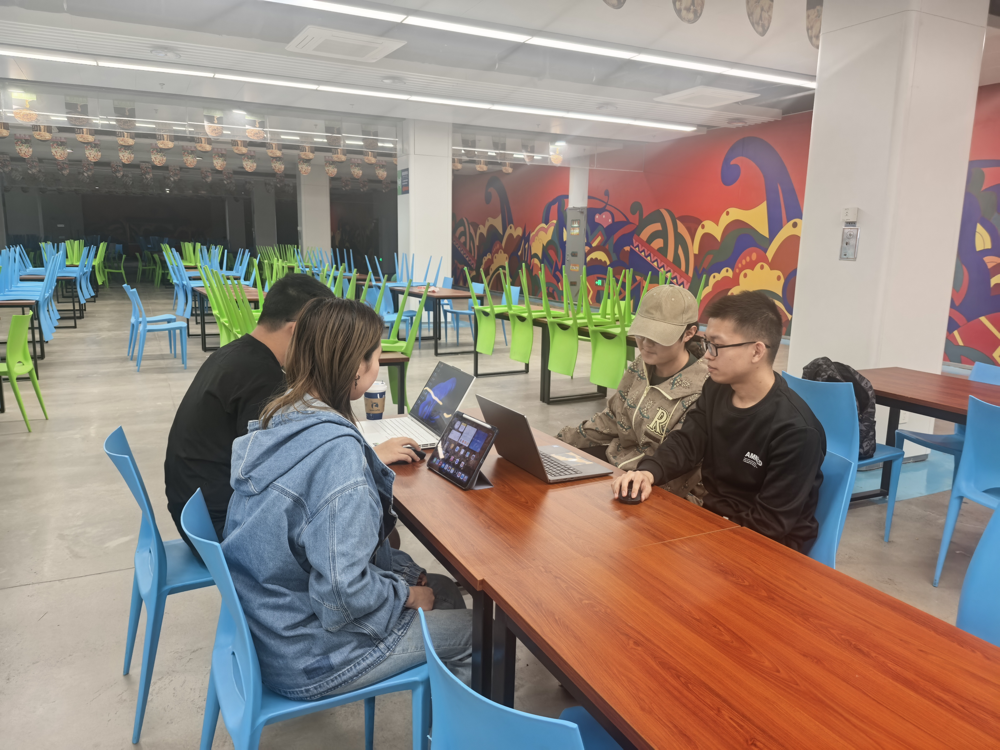
 01
01 02
02 03
03 04
04 05
05 06
06 07
07 08
08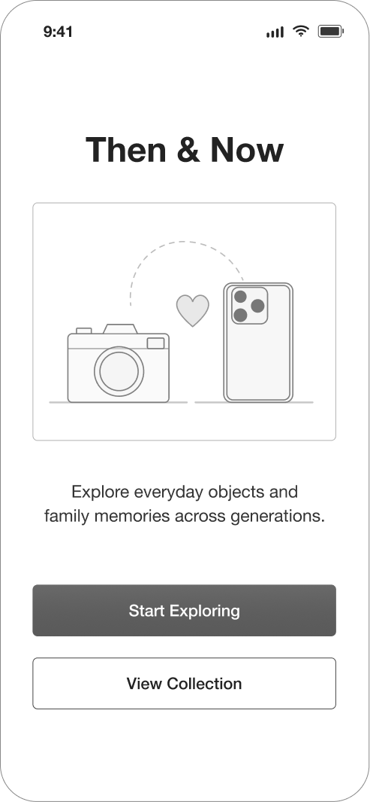
Screen 1
Introduces the object museum and guides families into memory exploration.
Core interaction: start browsing or add a meaningful object.
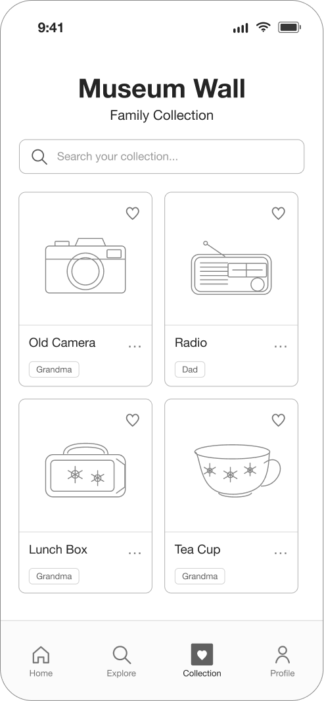
Screen 2
Shows family objects as a simple collection wall for quick browsing.
Core interaction: scan objects and select one exhibit to open.
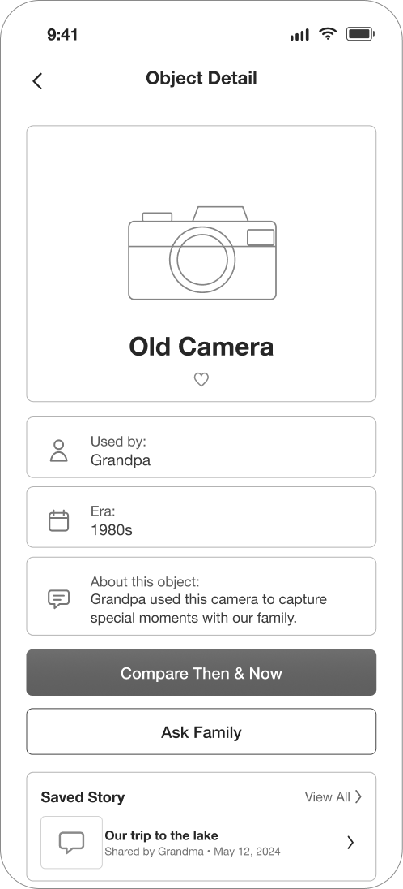
Screen 3
Presents one object with context, owner, date, and memory notes.
Core interaction: read the story and move into comparison.
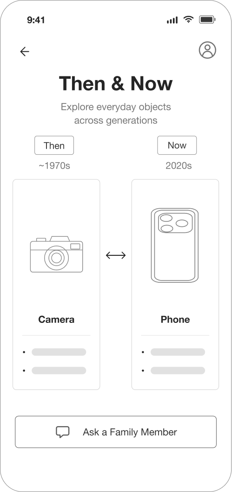
Screen 4
Places past and present objects side by side to reveal change over time.
Core interaction: compare paired items and discuss differences.
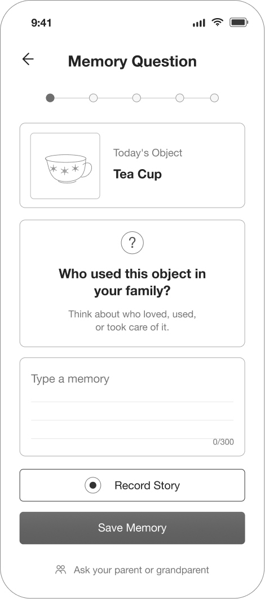
Screen 5
Uses a gentle prompt to help users recall stories connected to the object.
Core interaction: answer a guided question with family members.
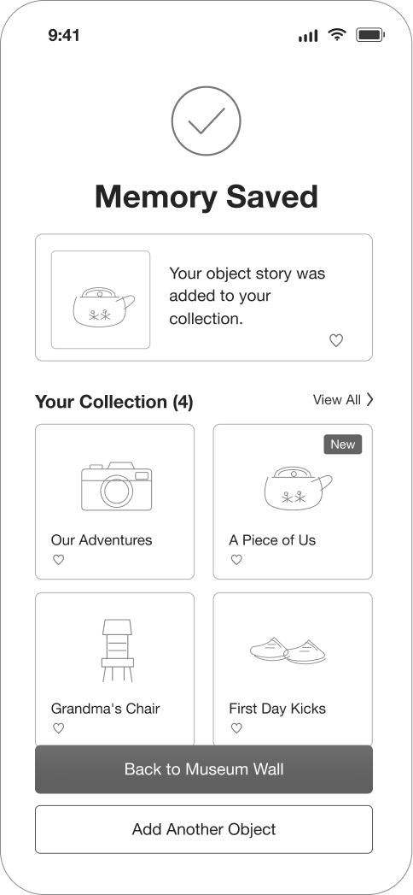
Screen 6
Confirms the memory is saved and returns it to the family collection.
Core interaction: review the saved memory or continue exploring.

The interface turns everyday family objects into a small mobile museum. Users can browse objects, compare old and new versions, answer a gentle memory prompt, and save the story back to the collection.
The demo uses a React web client for interaction, localStorage for instant interface feedback, and a Spring Boot REST API connected to MySQL for persistent family objects and stories. Real-time puzzle play can also sync through WebSocket messages when two family members interact together.
Updates screens immediately as users select objects, finish tasks, or save memories.
Completed puzzles, preset story unlocks, and cached user role.
Upload photos, create stories, update lock state, and count listening.
Broadcasts board changes and help requests between family browsers.
Family objects, story metadata, lock status, user roles, and lightweight local unlock states.
Upload an object, create a story, unlock a puzzle, load the museum wall, and update listen count.
Input validation, image fallback, confirmation before delete, and unified API response handling.
The usability test evaluated whether users could understand the exhibition concept, select an object pair, compare Then and Now meanings, write a short reflection, and save the result as a museum-style exhibit without additional explanation.
Understand the digital exhibition concept.
Select an old and new object pair.
Complete comparison and reflection tasks.
Save the exhibit and view the museum wall.
Age 20 · Familiar with most mobile apps
Completed independently, with a minor save-button issue.
Age 47 · Able to use some mobile app functions
Completed after understanding the flow, with short guidance.
Age 70 · Prefers simple interfaces
Required continuous help and clearer step-by-step guidance.
| Task Step | Completion | Issue Level | User Quote |
|---|---|---|---|
| Enter relationship | Complete | None | “I guess I need to pick two objects first?” |
| Select object pair | Needs moment | Minor | “Oh, this interaction is interesting.” |
| Complete interaction | Complete | None | “It’s intuitive once you start using it.” |
| Write reflection | Complete | None | “The idea behind connecting objects is interesting.” |
| Save and view wall | Needs moment | Minor | “Where do I save this?” |
| Task Step | Completion | Issue Level | User Quote |
|---|---|---|---|
| Enter relationship | Needs help | Minor | “What am I supposed to enter for relationship?” |
| Select object pair | Needs help | Minor | “Do I need to choose two items?” |
| Complete interaction | Complete | None | “Am I doing this correctly?” |
| Write reflection | Complete | None | “It’s actually easy to use, after I understood it.” |
| Save and view wall | Needs help | Minor | “Where is the save button?” |
| Task Step | Completion | Issue Level | User Quote |
|---|---|---|---|
| Enter relationship | Blocked | Severe | “What am I supposed to do here?” |
| Select object pair | Blocked | Severe | “Where should I click?” |
| Complete interaction | Blocked | Severe | “What does this mean?” |
| Write reflection | Needs help | Minor | “I can write, but I do not know what to write.” |
| Save and view wall | Blocked | Severe | “Am I finished?” |
“The interaction is quite creative and engaging.”
P1 · Young family member
“Once I understood it, it was straightforward to use.”
P2 · Parent
“The idea is interesting once it’s explained.”
P3 · Grandparent
Object comparison made the concept feel concrete.
Guidance helped users understand the flow.
The museum idea felt meaningful after explanation.
Before: Users hesitated at the final step because the save and wall entry points were not obvious.
After: The save button became a clearer primary action, and the result page made the museum-wall outcome explicit.
Before: The reflection task felt open-ended, especially for the grandparent participant.
After: The prompt was simplified so users could write a short optional memory instead of feeling forced to produce a full story.
Before: Older users could not infer the interaction sequence from visual layout alone.
After: Larger text, stronger step labels, and short instructions were added to support independent use.
Small UI captures document the iteration from unclear final actions to a more guided flow.
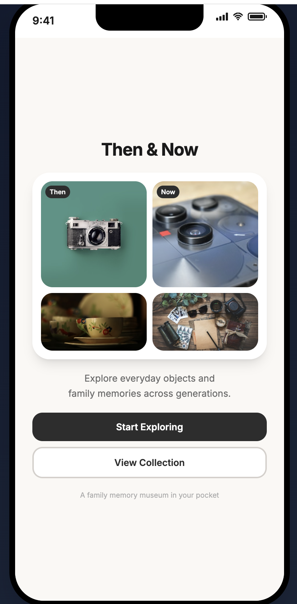
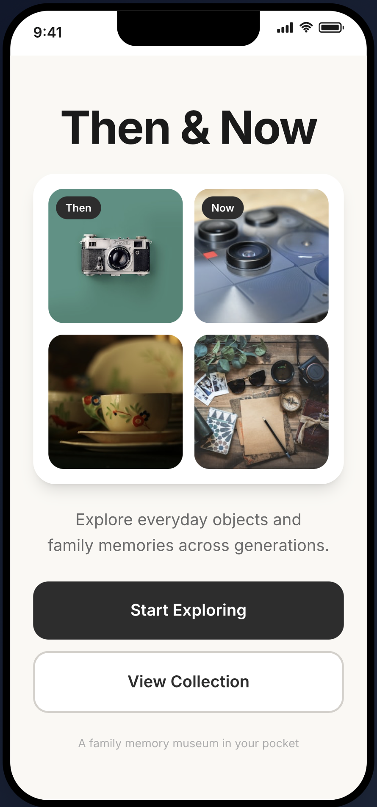
The testing showed that object comparison was easier to understand than the earlier voice-based concept. Familiar objects gave users concrete starting points for conversation, while the most important usability issues came from unclear guidance, small text, and hidden final actions.
Reduce cognitive load and help users understand the exhibition idea faster.
Support older users by making the interaction sequence visible and predictable.
Keep memory input optional, short, and emotionally comfortable.